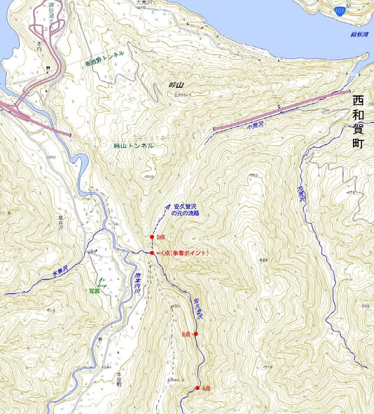
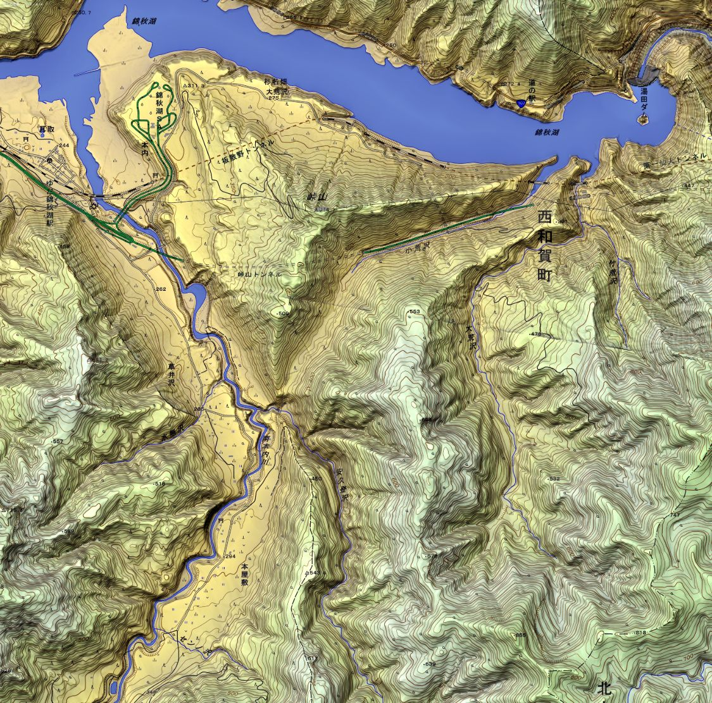
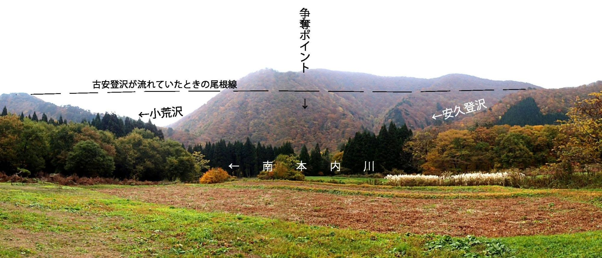
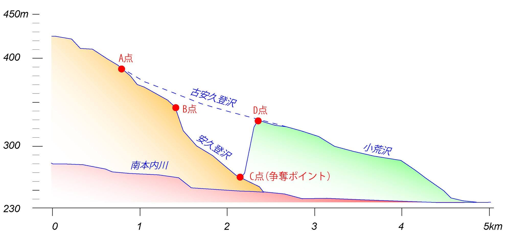

前回のコラムでは、紫波町の山中でこれから起こりうる河川争奪を追いかけました。今回は、もう起きてしまった争奪の現場です。舞台は西和賀町。手がかりは、一枚の地形図と、沢につけられた名前だけです。
地形図の、どこがおかしいか
錦秋湖の南、秋田自動車道の峠山トンネルのあたりです。まずは下の図を見てください。
南から北へ流れてくる安久登沢（あくとさわ）は、図の中ほどのC点で、蛇行する南本内川に注いでいます。そのすぐ北、尾根をひとつ越えたD点からは、小荒沢が北東の錦秋湖へ向かって流れ出しています。
おかしいのは小荒沢です。流域はとても小さいのに、谷の幅だけがやけに広い。この程度の水量の沢が、自分の力でこれほど大きな谷を削れるはずがありません。

答え：小荒沢は、もとは安久登沢だった
種明かしをします。昔の安久登沢（ここでは古安久登沢と呼びます）は、C点で止まらずにそのまま北へ進み、D点を抜けて、いまの小荒沢の谷を流れていました。あの広い谷は、上流の水を全部集めていた頃の安久登沢が削ったものです。
ところが、西側を流れる南本内川が蛇行しながら東へ谷を広げ、ついにC点で古安久登沢の流れに届いてしまいました。南本内川のほうがずっと低い位置を流れていたので、水は一気にそちらへ向きを変えます。河川争奪です。
水を奪われた下流側は、D点から先の小さな沢として取り残されました。それがいまの小荒沢です。
上から見ると、谷の大きさの違いはいっそうはっきりします。


縦断図で見る、70mの落差
川の高さを横から見た縦断図にすると、何が起きたのかがよく分かります。

見てほしいのは三つです。
- 点線（古安久登沢）｜A点からD点まで、約1.5kmで55mほどしか下がらない、ゆるやかな流れでした。
- C点とD点の高さの差｜すぐ隣どうしなのに、C点のほうが約70mも低い。南本内川の谷の底が、それだけ深いところにあったということです。水から見れば、すぐ横に「ずっと低い道」が開いたことになります。
- B点から下の急な区間｜争奪のあと、70mの落差を得た流れは谷底を激しく削りはじめました。その急な区間がC点から上流へさかのぼり、いまB点まで達しています。B点より上は、まだ昔のゆるい勾配のままです。
「悪党」になった沢と、おだやかになった沢
争奪のあと、ふたつの沢はまったく違う道を歩みました。
| 安久登沢（奪われて南本内川へ） | 小荒沢（水を失った側） | |
|---|---|---|
| 水の量 | 上流の水をすべて受け取る | D点から先の、わずかな水だけ |
| 勾配 | C点〜B点が急流になった（約0.75kmで80m下る） | 昔のままのゆるい勾配 |
| 削る力 | 強い。谷を深く刻みつづける | 極端に弱まった |
| 谷の姿 | 狭く、急で、荒々しい | 広く、おだやか。植物がよく茂る |
| 人との関わり | 名前が「悪党（あくとう）」に通じる | 谷ぞいに高速道路が通された |
安久登（あくと）沢という名前は、「悪党」に通じます。急流になって荒れるこの沢の性質を、昔の人はよく見ていたのかもしれません。
一方の小荒沢は、削る力がほとんどなくなったので、広くおだやかな谷のまま残りました。そして、そういう谷だったからこそ、高速道路がこの谷にそって通されました。広くてなだらかな谷は、道をつくるのにうってつけだからです。遠い昔の川の奪い合いが、いまの道路の位置を決めていることになります。
高速道路ができるずっと前、筆者が学生だった頃に歩いたこの谷には、植物が厚く茂っていました。このあたりの山の谷とは思えない、ふしぎな渓相（けいそう）でした。いま思えば、水を奪われて静かになった谷の姿だったのです。
なぜ奪われたのか。鍵は「水無沢」という地名
では、なぜ南本内川は東へ寄って、安久登沢の流れに届いてしまったのでしょうか。手がかりは、南本内川の西側（左岸）から流れ込む水無沢という名前にあります。
「水が無い沢」とは、運んでくる土砂が多く、水が砂利の下にもぐって流れてしまう（伏流する）沢のことです。水無沢が流れる山には第三紀の花こう岩がところどころに分布しています。この花こう岩の山は、第四紀のはじめ頃まで盛り上がり続けていたと考えられ、そのため崩れやすく、土砂をたくさん出してきました。
こうして見ると、争奪までの流れは次のように推定できます。
- 土砂に押される水無沢が西から大量の土砂を運び込み、南本内川の流れは谷の東側へ押しやられます。
- 尾根が崩れて、争奪東へ寄った南本内川が、安久登沢とのあいだを仕切っていた尾根のすそを削ります。尾根の一部が崩れ、安久登沢の水は滝になって南本内川へなだれ込みました。
- 盛り上がりが休むその後、このあたり一帯の隆起がしばらく止まります。川は深く削るのをやめて横に広がり、南本内川ぞいに広い河岸段丘ができました。
- 流れが西へ戻る急な東側の斜面から崩れた土砂が段丘を埋め、南本内川の流れは再び西へ移ります。南本内川の東側にも平らな段丘面が残っているのは、そのためです。
- ふたたび隆起して、固定やがて土地がまた盛り上がりはじめ、南本内川は両岸を削り込んで崖をつくりながら、いまの位置に固定されました。
地形は、休んでいた時期も覚えている
もう一つ、地形図から読めることがあります。安久登沢の西にある460mのピークの東斜面には、ところどころ階段のようにゆるくなった場所があります。
この緩い斜面は、南本内川に広い段丘ができた時期（上の3番目の段階）と同じ頃にできたと推定できます。土地の盛り上がりが休んでいたあいだ、争奪のあとで暴れていた安久登沢にも、おだやかな時期があったということです。地形は、川が暴れた時代だけでなく、休んでいた時代のことも記録しているのです。
動かして見る
争奪の流れを、6つの段階の模式アニメーションにしました。安久登沢が小荒沢の谷を広く削っていた頃から、花こう岩の隆起と水無沢の土砂に押された南本内川が尾根を切って水を奪い、首を切られた小荒沢の谷の頭が取り残されるまでを追います。上が平面図、その下が縦断図と2本の横断図です。再生ボタンで段階が進み、段階を選ぶとその場面だけを見ることもできます。
地形図で、争奪のあとを探してみよう
① 水の量に比べて、広すぎる谷｜小荒沢のように、流域が小さいのに谷だけ大きい沢。水を奪われた谷の可能性があります。
② 川が急に向きを変える場所｜C点のように、ひじを曲げたように折れ曲がる地点（争奪の肘）。
③ 低い尾根をはさんだ、高さの違う二つの谷｜C点とD点のように、すぐ隣なのに高さが大きく違う場所。
④ 途中で急になる沢｜B点のように、勾配がそこから急に変わる場所（遷急点）。
⑤ 沢の名前｜「悪党」「水無」など、地名が地形の性質を伝えていることがあります。
ことばのメモ
河川争奪｜川が、となりの川の上流部の水を奪いとること。
争奪の肘｜流れの向きが急に変わる、争奪が起きた地点。
遷急点（せんきゅうてん）｜川の勾配が急に変わるところ。時間とともに上流へさかのぼっていく。
河岸段丘｜川ぞいに階段状に並ぶ平らな土地。川が横に広がった時期と、深く削り込んだ時期のくり返しでできる。
伏流｜川の水が、砂や砂利の下にもぐって流れること。
地形図は、情報の宝庫
地形図は、場所を確かめるためだけのものではありません。等高線の込み具合、谷の幅、川の曲がり方、そして沢の名前。それらをつなぎ合わせると、その土地がどう成り立ってきたのか、植物の移り変わりまで推しはかることができます。
「地質屋の特殊能力」と思われがちですが、地形を読むことは誰にでもできます。必要なのは、地図を読む力と、それを頭の中で立体に組み立てる少しの練習だけです。ぼんやり地形図を眺めていて「あれ、ここは変だぞ」と感じたら、それが入口です。
現場は地理院地図でも見ることができます。峠山トンネルのすぐ南、ぜひ自分の目で、広すぎる小荒沢の谷を確かめてみてください。
※ 筆者がFacebookに出題した「河川の争奪」クイズとその解答をもとに、あらためて書き起こしました。縦断図の数値はおおよその読み取り値です。争奪の過程と、アニメーションの地形・流路は、地形から推定した模式です。